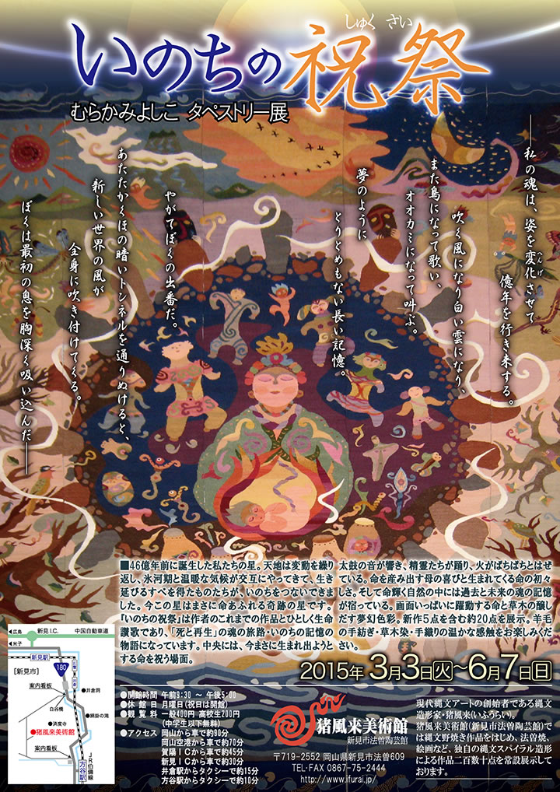

|  |
| 【企画展『いのちの祝祭』チラシ】 →PDF版を開く |
――私の魂は、姿を変化させて
億年を行き来する。
吹く風になり白い雲になり、
また鳥になって歌い、
オオカミになって叫ぶ。
夢のように
とりとめもない長い記憶。
やがてぼくの出番だ。
あたたかくほの暗いトンネルを通りぬけると、
新しい世界の風が
全身に吹き付けてくる。
ぼくは最初の息を胸深く吸い込んだ――
=∴=∵=∴=∵=∴=∵=∴=∵=∴=∵=∴=∵=∴=∵=∴=∵=∴=∵=∴=∵=∴=∵=∴=∵=∴=∵=∴=
46億年前に誕生した私たちの星。
天地は変動を繰り返し、氷河期と温暖な気候が交互にやってきて、生き延びるすべを得たものたちが、いのち
をつないできました。
今この星はまさに命あふれる奇跡の星です。
『いのちの祝祭』は作者のこれまでの作品とひとしく生命讃歌であり、「死と再生」の魂の旅路・いのちの
記憶の物語になっています。
中央には、今まさに生まれ出ようとする命を祝う場面。
太鼓の音が響き、精霊たちが踊り、火がぱちぱちとはぜている。
命を産み出す母の喜びと生まれてくる命の初々しさ。
そして命輝く自然の中には過去と未来の魂の記憶が宿っている。
画面いっぱいに躍動する命と草木の醸し出す夢幻色彩。
新作5点を含む約20点を展示。
羊毛の手紡ぎ・草木染・手織りの温かな感触をお楽しみください。